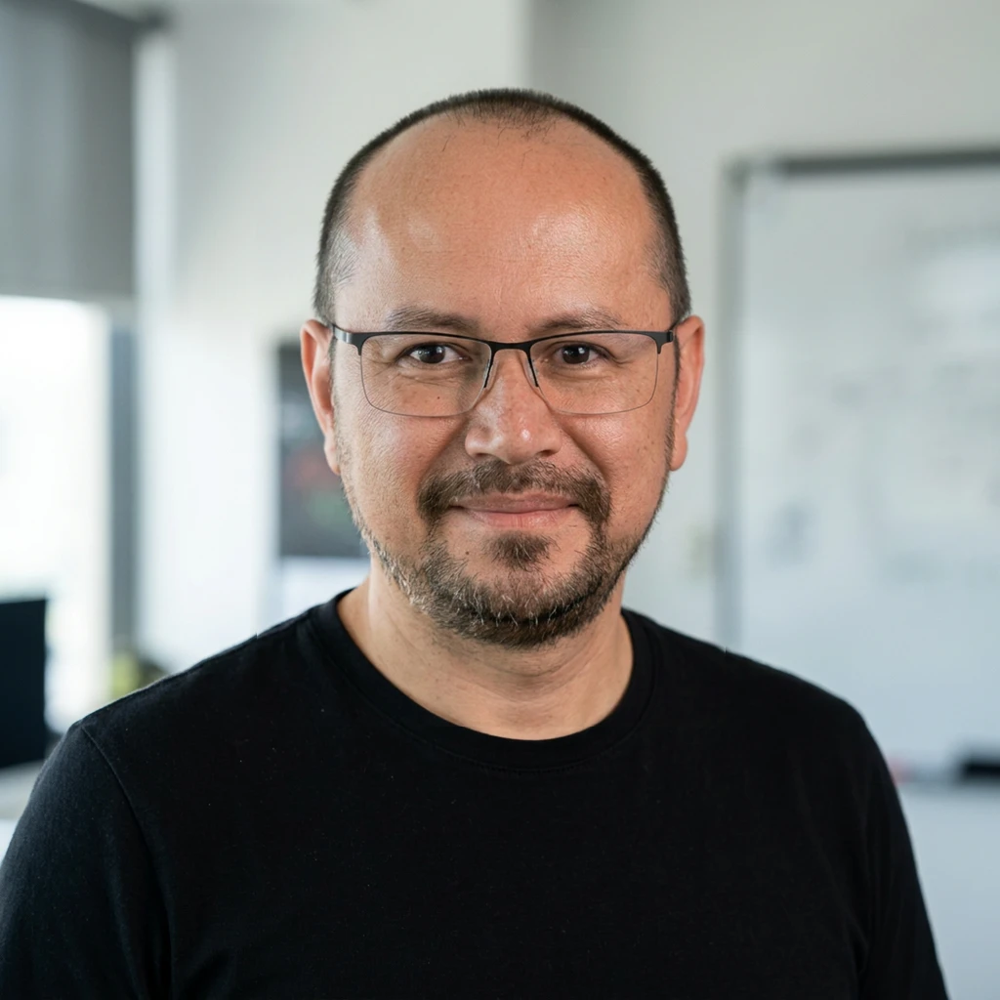

Winetime Asia
Co-founder & Director
Cambodia / Asia · Since 2016Co-founded and grew a wine distribution platform in Asia, dedicated to selecting, positioning and bringing to market high-value estates and brands.
Executive · Entrepreneur · Strategic Advisor, France–Asia
Investment · Management · Marketing · Strategy
I help investors, executives and brands structure, accelerate and deploy their activities in Asia — with recognised expertise in wine, premium goods and impact-driven projects.
Over 25 years leading organisations, building partnerships and creating companies between Cambodia, Southeast Asia and France.

Profile
Based in Phnom Penh, I am an executive, entrepreneur and strategic advisor with more than 25 years of experience at the crossroads of Cambodia, Southeast Asia and France.
My career combines leading complex organisations, driving operational transformations and building entrepreneurial ventures. At Pour un Sourire d'Enfant (PSE), I rose to the position of Country Program Director, responsible for more than 750 staff, an annual budget of USD 8M, and programmes benefiting over 50,000 people.
Since 2016, I have been developing and leading entrepreneurial ventures in wine, import-export and France–Asia business relations, notably through Winetime Asia, Vinissimo Asia and Vinissimo SAS. Alongside this, I advise on investment, company structuring, brand strategy and business development — including renewable energy and waste valorisation projects with Quadran International.
My added value: turning an ambition into an organisation, a business model and a growth trajectory suited to the realities of Asian markets.
Advisory expertise
Opportunity assessment, project structuring, company formation, partner sourcing and support from launch through to fundraising.
Designing efficient organisations, structuring leadership teams, implementing steering processes and optimising operational and budget performance.
Defining brand, distribution and business development strategies for wine, premium goods and international brands in Asia.
Supporting companies and investors in accessing Asian markets: sourcing, partnerships, regulation, distribution and local deployment.
Entrepreneurship
Co-founder & Director
Cambodia / Asia · Since 2016Co-founded and grew a wine distribution platform in Asia, dedicated to selecting, positioning and bringing to market high-value estates and brands.
Co-founder & Director
Cambodia / Asia · Since 2016Founded and developed a wine import and distribution company in Asia, built around a model combining cost optimisation, supply chain control and regional expansion.
Founder
France · Since 2016Created the group's French entity to serve as the strategic interface between producers and sourcing in France and distribution networks in Asia. Leading supplier relations, portfolio selection and coordination of France–Asia flows.
An ongoing collaboration since 2016, alongside the growth of my entrepreneurial activities in wine.
Renewable energy & Waste-to-Energy
CambodiaAlongside my wine activities, developing impact projects in waste-to-energy valorisation and the deployment of solar farms in Cambodia.
Co-founder & President
Phnom Penh · 2015 –Founded an audiovisual production company to connect PSE's media school with the professional world, strengthen students' employability and generate revenue to support training programmes.
Professional career
Winetime Asia · Vinissimo Asia · Vinissimo SAS · Quadran International
Building and leading wine companies in Asia and France; advising on investment, management, marketing and strategy.
Pour un Sourire d'Enfant (PSE) — Phnom Penh / Siem Reap / Sihanoukville
Strategic and operational leadership of a large-scale education and vocational integration programme:
Phnom Penh
Grew revenue and professional partnerships for the audiovisual production company.
Pour un Sourire d'Enfant (PSE) — Phnom Penh / Siem Reap
Managed 800 students across 20 programmes and 3 schools, a team of 80 people, and an annual budget of USD 1M.
Pour un Sourire d'Enfant (PSE) — Phnom Penh
Created the "Remedial Education" programme, later adopted by 128 public schools nationwide.
Cambodia Commerce International — Phnom Penh
Imported and distributed wine, spirits and pharmaceuticals from France; grew sales by more than 20% per year.
International Rice Research Institute (IRRI) — Phnom Penh
Tested the effectiveness of new chemical fertilisers marketed locally.
Education
Honours & affiliations
Contact
Considering an investment, a market entry or a commercial push in Asia? Let's discuss how to structure your project, de-risk its rollout and set the conditions for sustainable growth.
Phnom Penh, Cambodia